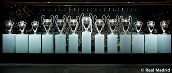
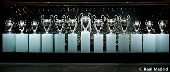

Association football, more commonly known as football or soccer, is a team sport played with a spherical ball between two teams of eleven players. It is played by 250 million players in over 200 countries and dependencies, making it the world's most popular sport.The game is played on a rectangular field called a pitch with a goal at each end. The object of the game is to score by moving the ball beyond the goal line into the opposing goal.
Association football is one of a family of football codes, which emerged from various ball games played worldwide since antiquity. The modern game traces its origins to 1863 when the Laws of the Game were originally codified in England by The Football Association.
Players are not allowed to touch the ball with hands or arms while it is in play, except for the goalkeepers within the penalty area. Other players mainly use their feet to strike or pass the ball, but may also use any other part of their body except the hands and the arms. The team that scores most goals by the end of the match wins. If the score is level at the end of the game, either a draw is declared or the game goes into extra time or a penalty shootout depending on the format of the competition. Association football is governed internationally by the International Federation of Association Football (FIFA; French: Fédération Internationale de Football Association), which organises World Cups for both men and women every four years.
Rules of football(Soccer):
A match consists of two 45 minutes halves with a 15 minute rest period in between.
Each team can have a minimum off 11 players (including 1 goalkeeper who is the only player allowed to handle the ball within the 18 yard box) and a minimum of 7 players are needed to constitute a match.
The field must be made of either artificial or natural grass. The size of pitches is allowed to vary but must be within 100-130 yards long and 50-100 yards wide. The pitch must also be marked with a rectangular shape around the outside showing out of bounds, two six yard boxes, two 18 yard boxes and a centre circle. A spot for a penalty placed 12 yards out of both goals and centre circle must also be visible.
The ball must have a circumference of 58-61cm and be of a circular shape.
Each team can name up to 7 substitute players. Substitutions can be made at any time of the match with each team being able to make a maximum of 3 substitutions per side. In the event of all three substitutes being made and a player having to leave the field for injury the team will be forced to play without a replacement for that player.
Each game must include one referee and two assistant referee’s (linesmen). It’s the job of the referee to act as time keeper and make any decisions which may need to be made such as fouls, free kicks, throw ins, penalties and added on time at the end of each half. The referee may consult the assistant referees at any time in the match regarding a decision. It’s the assistant referee’s job to spot offside’s in the match (see below), throw ins for either team and also assist the referee in all decision making processes where appropriate.
If the game needs to head to extra time as a result of both teams being level in a match then 30 minutes will be added in the form of two 15 minute halves after the allotted 90 minutes.
If teams are still level after extra time then a penalty shootout must take place.
The whole ball must cross the goal line for it to constitute as a goal.
For fouls committed a player could receive either a yellow or red card depending on the severity of the foul; this comes down to the referee’s discretion. The yellow is a warning and a red card is a dismissal of that player. Two yellow cards will equal one red. Once a player is sent off then they cannot be replaced.
If a ball goes out of play off an opponent in either of the side lines then it is given as a throw in. If it goes out of play off an attacking player on the base line then it is a goal kick. If it comes off a defending player it is a corner kick.
Offside rule:
Offside can be called when an attacking player is in front of the last defender when the pass is played through to them. The offside area is designed to discourage players from simply hanging around the opponent’s goal waiting for a pass. To be onside they must be placed behind the last defender when the ball is played to them. If the player is in front of that last defender then he is deemed to be offside and free kick to the defending team will be called.
A player cannot be caught offside in their own half. The goalkeeper does not count as a defender. If the ball is played backwards and the player is in front of the last defender then he is deemed to be not offside.
click here to get latest updates of UEFA Champions League:

 
